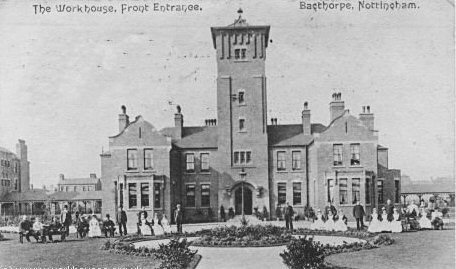

Thomas Noble, 1876 - 1915
Thomas Noble was born on 5 April 1876 in Narrow Marsh, Nottingham. He was the son of John Noble and Selina and christened on 28 January 1877 at St Johns. Thomas's father was described as a foundry labourer and engine driver, whilst Selina (formerly Lloyd) had worked as a silk hand. Narrow Marsh was a notorious Nottingham slum of narrow courts and back to back houses and the family would have lived in relatively poor conditions. Two years later they had moved to a nearby court in Martins Yard and by 1881 they were living in Long Stairs nearby. Thomas's mother Selina Noble was absent soon after Thomas was born. It is not clear whether this was as a result of a breakdown in their marriage or whether she was forced to work away from home to send money back to the family. In 1881, when Thomas was 5 and living with his father in Long Stairs Nottingham, his mother appears as a housekeeper for James Bradbury and his family living at their shop premises in Bridge Gate, Derby.

Long Stairs, Nottingham
By 1891 Thomas was 15 and the family had moved again, this time to Pear Street. Although of working age at 15 there is no occupation shown for Thomas in the 1891 census. Also living with Thomas and his father John in both 1881 and 1891 was Charlotte Sawler. She is described as a lodger and boarder but she was eventually to marry John and become Thomas's stepmother.
By 1898 Thomas had found employment in Nottingham's cotton industry as a 'cotton repairer' and met Mary Ann Bunting (aka Keetley) who was a 'cotton cleaner'. It is possible that they met through their work, for one of the Nottingham cotton manufacturers such as Hine and Mundella, whose large factory was close by. They married at St Matthias, Sneinton in May 1898.

The cotton industry
By 1901, three years after their marriage, Thomas and a pregnant Mary Ann were living with Mary Ann's parents at Harvey Terrace in St Anns, Nottingham. They are described as lodgers in the 1901 census and Thomas is a 'Cotton Presser' by occupation. It is at this time that they have their first child, William. Thomas's occupation remains the same throughout most of his working life. However work in the cotton trade was precarious during this period and this is reflected by the frequency with which his family sought the support of the workhouse. There are a number of references in the Nottingham Workhouse Admission and Discharge Books to Thomas's family, including the birth of his son <a href="../george/george.html">George Henry Noble</a> born in Bagthorpe Workhouse in 1904. It is not clear whether the family stayed together during this period as Thomas's wife Mary Ann and their sons William and George enter the workhouse on their own in February 1908. In March 1908 the boys are 'discharged' to their father at Ash Yard, Howard Street, but Thomas's wife appears to remain in the Workhouse on her own. In 1910 Mary Ann gives birth to Christopher but it is unlikely that Thomas is the father.

Nottingham (Bagthorpe) Workhouse 1906
By 1911 Thomas and Mary Ann were clearly living apart. Thomas (or 'Tom') is living with his parents at Ash Yard, at the time of the census. Mary Ann, described as 'Mrs Hannah Noble' and the children, are living with Robert Thompson in Carlton, Nottingham. Mary Ann is described as a 'boarder'.
Thomas died relatively young, at just 40, on 10 February 1915. However he outlived his estranged wife by three months as she died of pneumonia in December 1914. The children, aged 14, 11 and 5, were taken in by their grandmother (Mary Ann's mother) Clara Bunting.
<a href="../noble.html">Noble's</a>